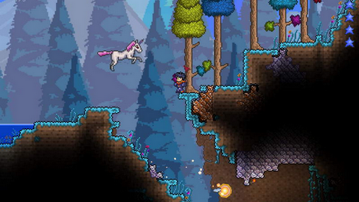
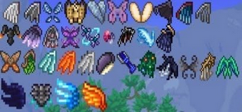
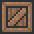

Переход в хардмод (сложный режим)
Хардмод (Hardmode) — режим мира, который включается после победы над Стеной плоти. При этом появляется надпись "The ancient spirits of light and dark have been released".
После убийства Стены Плоти ваш мир перейдёт в режим хардмод. Это означает, что игра станет намного сложнее. Появятся новые монстры, искажение/кримзон будет распространяться очень быстро — вы даже не сможете за ним уследить, появится новый биом — святые земли, который содержит множество опасных врагов и быстро распространяется, и многое другое, к чему вы должны быть готовы.
Для битвы со Стеной плоти вам потребуется минимум броня из теневой чешуи, побольше аксессуаров, крюк-кошка и 200 ед. здоровья. Ещё вы должны сделать адскую кирку из адской руды, которой можно добывать первую хардмодную руду - кобальт/палладий.
Очень разумным решением будет вырастить на поверхности грибной биом (до перехода в хардмод).
Для начала вы должны пойти в искажение (или кримзон) и разбить демонические/кровавые алтари с помощью вашего нагибатора, который всегда выпадает со Стены Плоти. Можно ломать сколько угодно алтарей, но один желательно оставить для крафта. Разбитие алтарей приведёт к появлению новой руды в мире, но будьте осторожны: когда вы разбиваете алтарь, то на вас нападает несколько призраков. После уничтожения алтарей вы можете начать поиски новой руды. Можно пойти в ваши старые исследованные/заброшенные пещеры и шахты, вероятно, там может быть новая руда. Для вас вначале будет представлять ценность только синяя (кобальт) или оранжевая (палладий) руда, поскольку другие вы выкопать не сможете (места с прочей рудой стоит отметить, чтобы собрать её в будущем). Во время исследования могут попасться много незнакомых врагов, которые сильнее вас, поэтому нужно использовать тактику укрытий и лечения. Во время путешествий по пещерам вы можете наткнуться на подземные святые земли и на подземное искажение/кримзон. Каждый из них опасен по-своему, подземное искажение будет похоже на джунгли, а подземные святые земли — на обычные пещеры. Также вы можете заметить, что в подземных святых землях на перлите растут разноцветные кристаллы. Можете собрать их, чтобы сделать огромное зелье лечения, которое восстанавливает 150 HP. Помимо этого есть возможность сделать из них фазовую саблю (но только если у вас есть фазовый меч) — отличное оружие в начале хардмода. Также вы можете найти нового НИПа в пещерах — волшебника. Он продаёт вещи, которые могут помочь вам в дальнейшем (такие как ледяной жезл, колокольчик, и арфа).
После добычи кобальта/палладия, первым делом вы должны будете сделать кобальтовый бур/палладиевый бур или кирку, чтобы добывать мифрил/орихалк (салатовая/розовая руда), а также начинать откладывать на палладиевые или кобальтовые доспехи, меч(но делать это необязательно, так как грань ночи с хорошей ковкой может заменить все мечи до экскалибура), копьё, и арбалет. После крафта доспехов, вы можете отправиться добывать важную вещь на начальных уровнях — цепь Инь-Ян. Она может стать вашим главным оружием против толп монстров или тварей сегментированного типа. При нахождении мифрила/орихалка, вы должны сделать из него орихалковую или мифриловую наковальню, необходимый предмет для создания почти всех хардмодных вещей (включая кристаллические пули и цепь Инь-Ян). Далее вам понадобится новый аксессуар — крылья. Но сделать их будет не просто, вам нужно будет находится на уровне, необходимому для создания парящих островов. Вам понадобятся перья из гарпий и души нового моба парящих островов — виверны. Это сильный монстр, имеет 4000 ед. жизни и мощную атаку. Виверна — сегментированный монстр. Это означает, что лучше будет использовать любое проникающие оружие, как против Пожирателя миров. Вам понадобится 20 таких душ, чтобы сделать крылья (это примерно 2-4 виверны). И сейчас начнётся самая сложная часть — сбор душ света/ночи. Какие души вы выберете, такого типа и будут крылья. Однако, есть более хитрый способ добыть себе крылья. Первым делом мы идем в подземные джунгли (желательно до перехода в хардмод) и находим пчелиный улей. Далее мы убиваем Королеву Пчёл и строим дом на поверхности джунглей(в идеале - создаём соответствующий биом у себя на базе прямо внутри дома для шамана, чтобы не рисковать, гуляя по хардмодным джунглям) и ждем пока не придет шаман. После всего этого нужно накопить одну платину, открыть хардмод, а потом идти к шаману ночью и покупать крылья. После похода в подземные святые земли или подземное искажение/кримзон вы соберёте достаточно душ (а также вероятно ещё кобальта/палладия и мифрила/орихалка). Теперь вы можете возвращаться домой, чтобы скрафтить слитки (если вы собирали руду) и крылья. Крылья — это необходимый аксессуар, который очень поможет Вам. Главным плюсом является то, что вы не получаете урона от падения (что делает счастливую/обсидиановую подкову бесполезной), а также можете летать. Вы можете использовать ваши молниеносные сапоги,что бы увеличить время и скорость полёта.
Итак, теперь приступаем к созданию орихалковой или мифриловой брони. После добычи мифрила/орихалка вы можете отправиться на добычу адамантита/титана (красная/серебристая руда). Адамантит/титан добывается только мифриловым/орихалковым или выше буром/киркой, поэтому без него его не добыть. Адамантит/титан находится глубоко под землёй, нередки случаи, когда его находили даже в аду. Адамантит/титан — это ваша финальная руда. Когда вы соберёте руду, вы не сможете её просто так переплавить в слитки — для этого понадобится титановая/адамантитовая печь.
Есть способ очень сильно облегчить развитие в хардмоде с помощью игровой фичи. В этом поможет рыбалка. Во время рыбалки можно получить ящики, открыв которые можно получить руду или готовые слитки. Если вы выловите ящик до хардмода, отложите его в надёжное место и затем откроете его в хардмоде, то получите хардмодные слитки/руду. Таким образом вы избавляете себя от опасных походов по пещерам, наполненных невероятно сильными монстрами, которые способны прикончить вашего персонажа за несколько ударов. Но ничего не даётся так просто: чтобы накопить достаточное количество ящиков для создания всего титанового снаряжения нужно провести часы за рыбалкой. Чтобы при переходе в хардмод ни в чем себе не отказывать вам понадобится минимум 15 золотых/биомных ящиков, 30 железных ящиков и 60 деревянных ящиков. Это много и рыбачить придётся очень долго. Ещё плюсом от данного метода является то, что вам не обязательно будет ломать алтари. Если вы не будете ломать алтари, то избавите себя от внезапных пиратских нашествий и внезапно из ниоткуда взявшихся багрянца/искажения/святых земель.
Итак, настал момент когда вы собрали достаточно адамантита/титана, мифрила/орихалка и кобальта/палладия. Далее вы должны сделать святую броню ,а так же мощные инструменты. Для этого вам нужен лут хардмодных боссов.
Вы должны быть готовы на все 100%, чтобы победить их, поэтому не жалейте зелий, патронов и улучшений — они могут помочь в особенно ответственный момент. Желательно начинать с Уничтожителя, потому что он является самым слабым по тактике боя, но не по силе, следующими будут являться Близнецы, а потом Скелетрон Прайм.